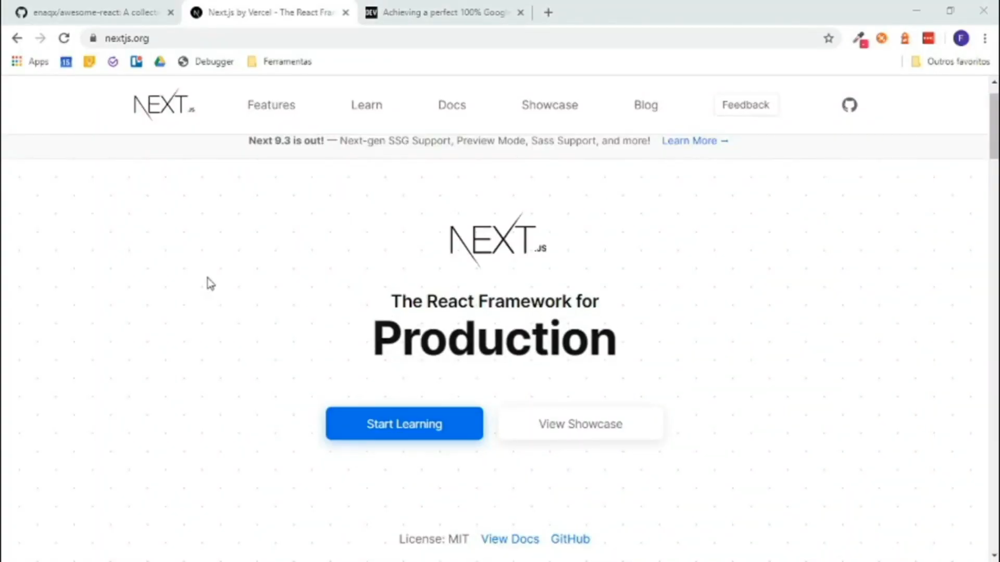

De volta ao Next.js
O Next.js por sua vez, busca reunir diversas funcionalidades a fim de manter o foco total em sua produtividade e eficiência. Totalmente pré-configurado, fornece toda estrutura para a criação de projetos com maior facilidade, trazendo para o desenvolvedor maior agilidade na criação de suas aplicações.
Além disso, o Next.js permite que suas aplicações sejam renderizadas no lado do servidor (SSR), diminuindo o tempo de carregamento da aplicação, já que o esforço fica por conta do servidor, não do dispositivo do cliente, além de consumir menos recursos.
Mantido pela equipe da Vercel, o Next.js vem sendo utilizado por diversas empresas em todo mundo, dentre elas podemos citar o Uber, GitHub, TikTok, Twitch, AT&T, Nike,entre outras.
Características do Next.js
Apesar de utilizar o React como base para sua criação, o Next.js possui diversas características, algumas exclusivas do framework e outras compartilhadas do React como veremos abaixo:
Podemos concluir que…
Neste artigo vimos o que é o Next.js e suas principais características. Muito utilizado por grandes empresas, o frameworks é uma excelente alternativa para o desenvolvimento de diversos tipos de projetos.
No site do Next.js podemos encontrar toda a sua documentação, boletim informativo, tudo sobre novas atualizações, recursos, guias e muito mais.
Next.js: https://nextjs.org
Aplicação 100% no Lighthouse: https://dev.to/kylessg/achieving-a-perfect-100-google-lighthouse-audit-score-with-next-js-and-redux-5p0
Lighthouse: https://developers.google.com/web/tools/lighthouse
